拍案三国 · 美术册
怀旧印刷 · 第三次美术迭代
旧纸 · 木桌 · 朱印
操场就是荆州
把童年的拍卡课桌，接回三国纸牌的世界。
保留旧印刷的墨线和套色，让每一张牌、每一页手册都有自己的位置。
两张场景童年操场封面 · 拍卡木桌
三张人物小野 · 雷飞 · 阿棠
169 张卡池完整保留 · 其余 166 张沿用原卡面
本轮重新生成两张场景与三张人物插画，并接入游戏。下方界面全部来自实机；部分画面使用展示用测试存档，不代表玩家自然游玩的进度。
从一盒旧牌开始
封面 · 童年操场与三国将牌

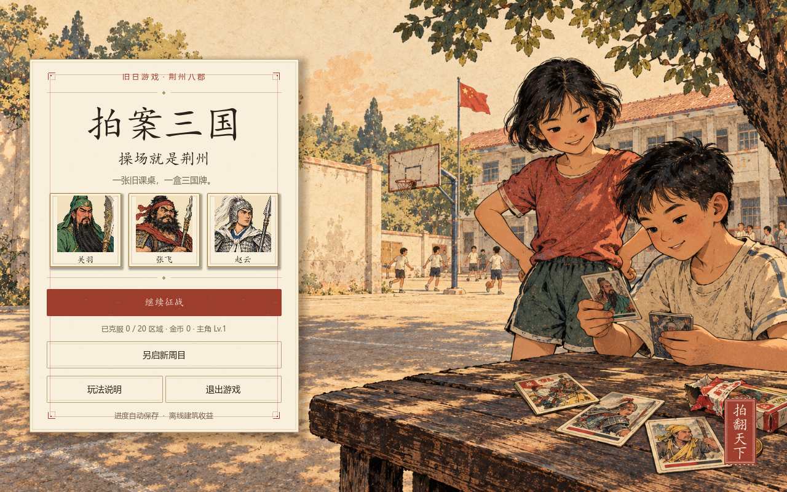
展开查看上一轮封面

把三国铺在课桌上
拍卡主桌 · 更清楚的牌面与上阵栏

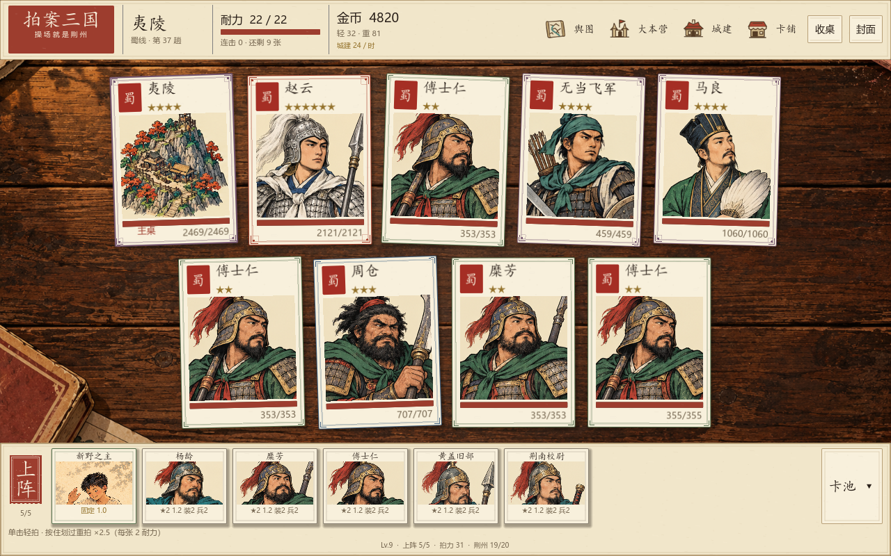
同一关卡 · 前后对照


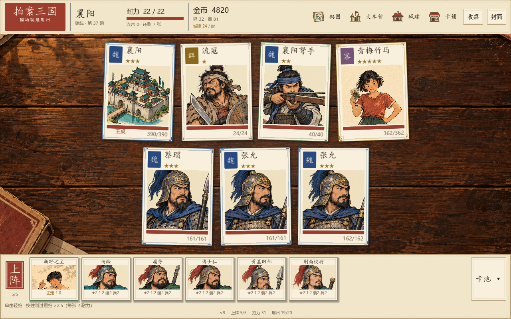
翻一页，整备下一桌
大本营 · 城建 · 舆图 · 开包

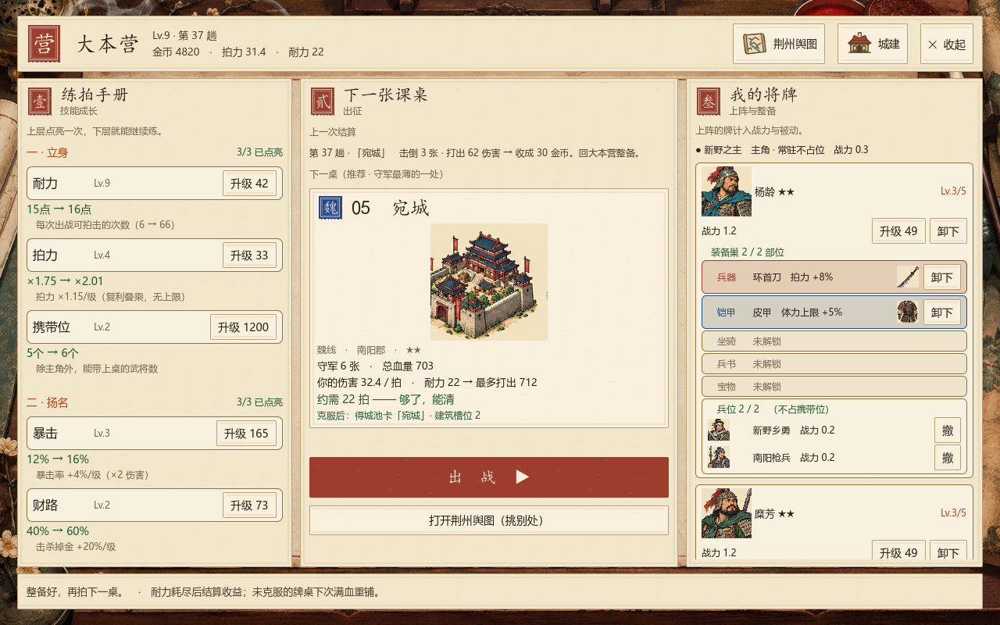

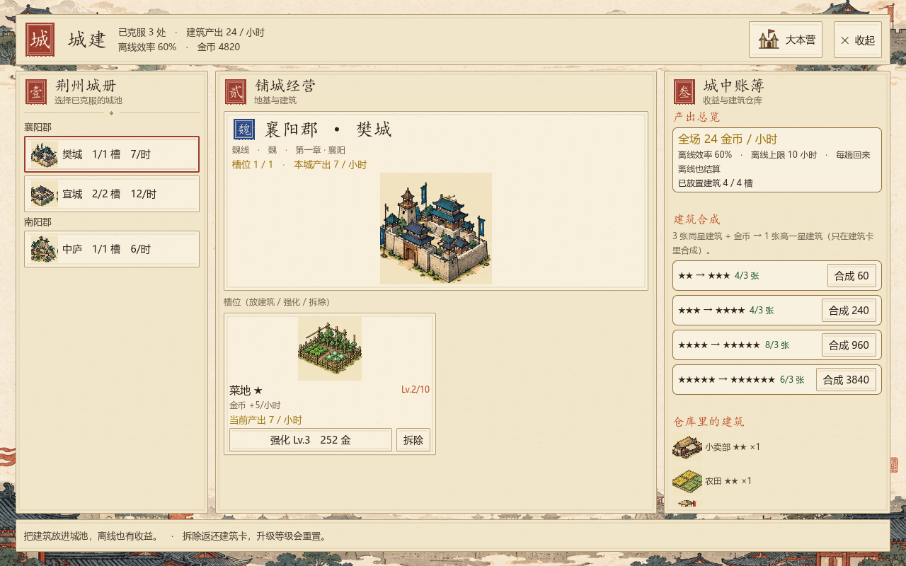

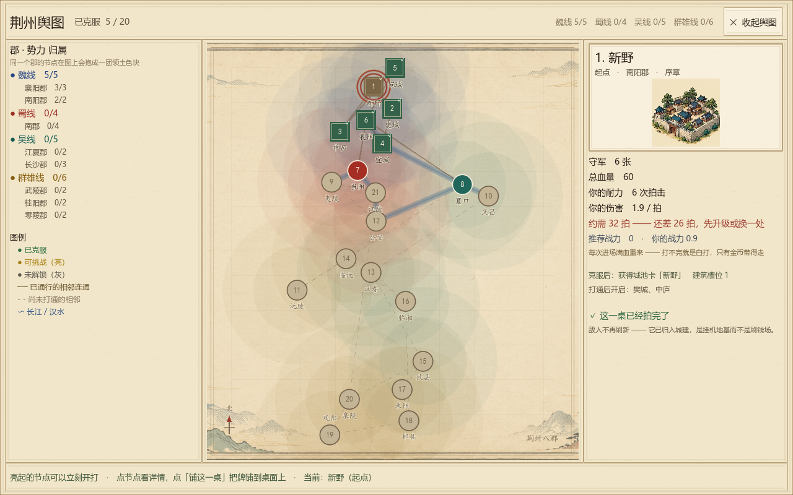

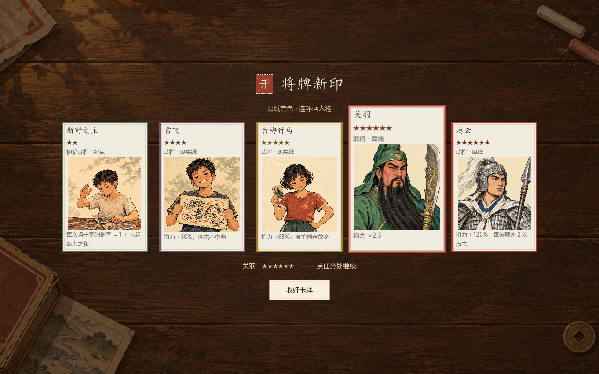
一拍、一换、一收
实际交互状态 · 小窗口检查

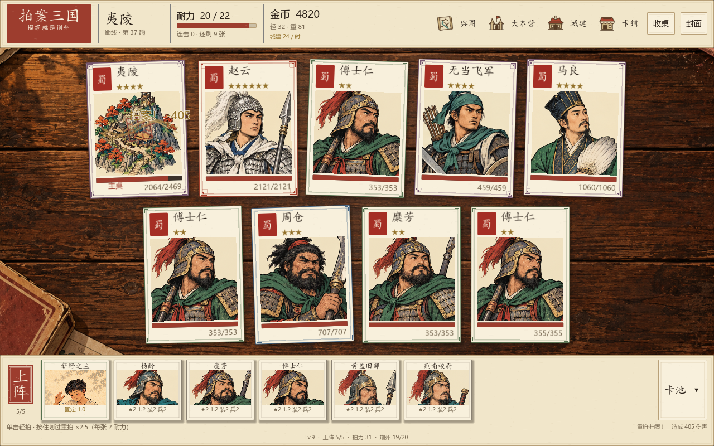

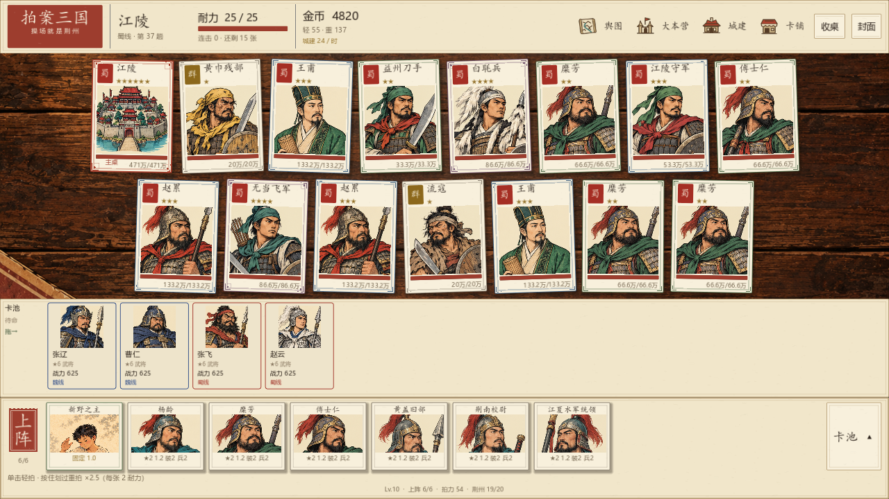

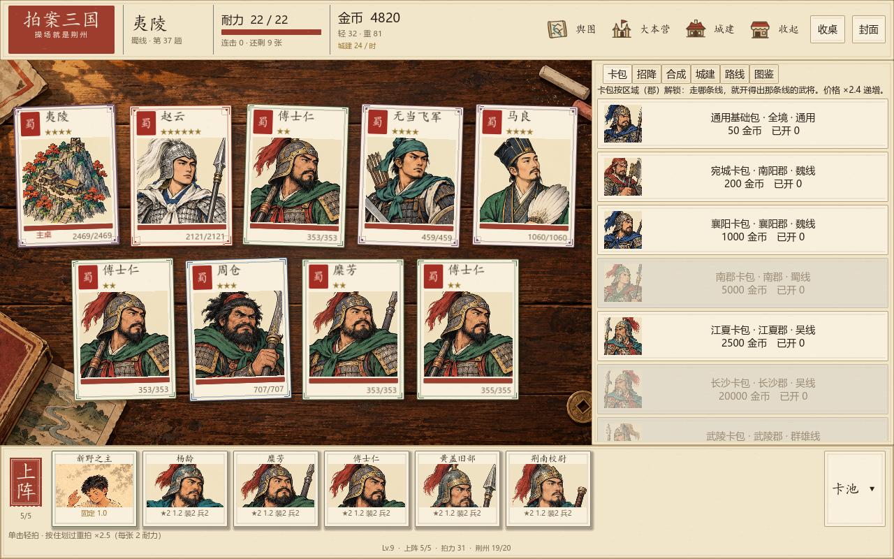

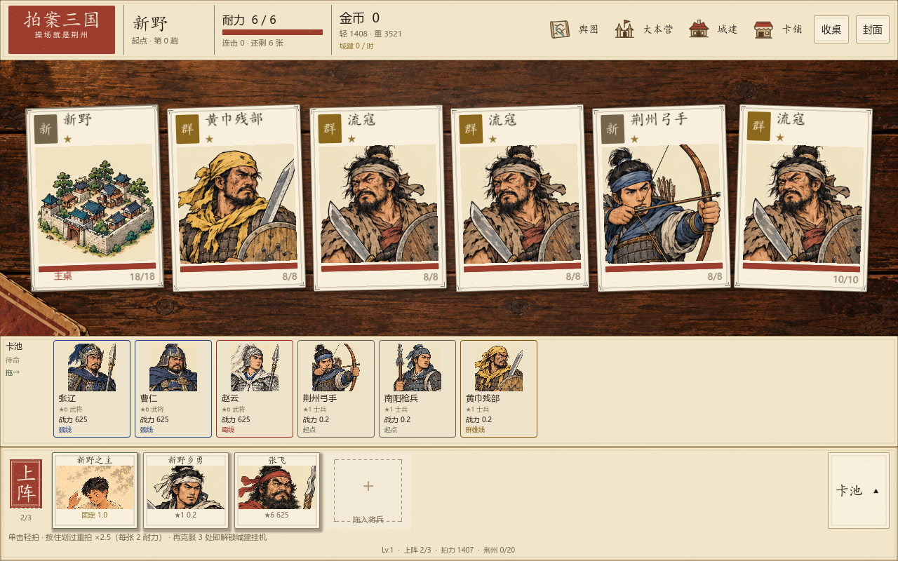
这一轮的新画稿
两张场景 · 三张现实人物
场景与人物沿用旧纸、线刻和低饱和套色。下面是独立素材原图；游戏中的裁切、字号、数值和交互由实际界面呈现。

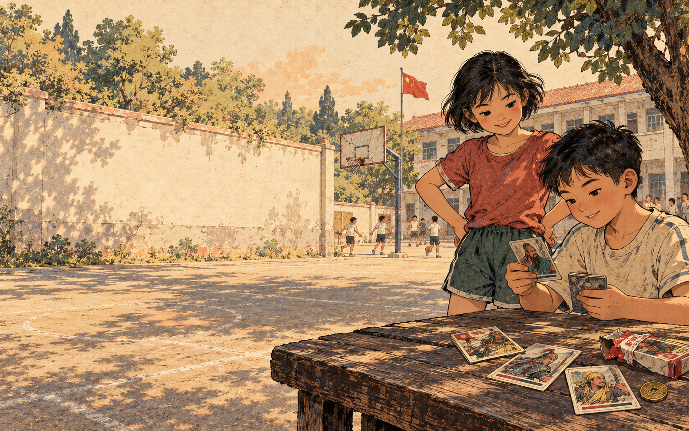


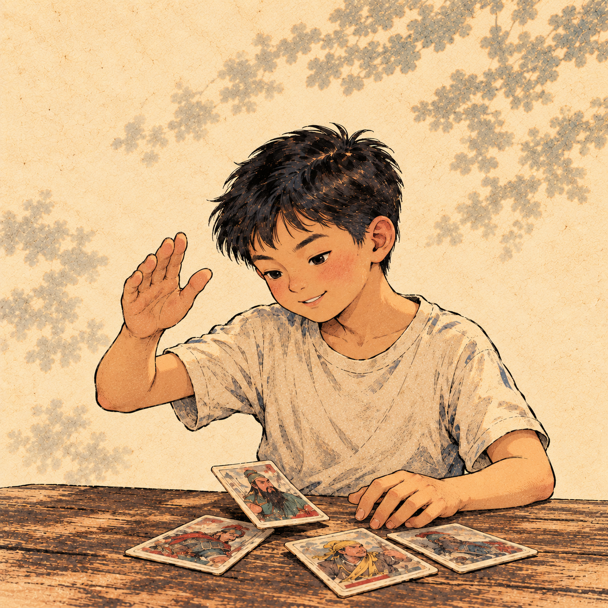

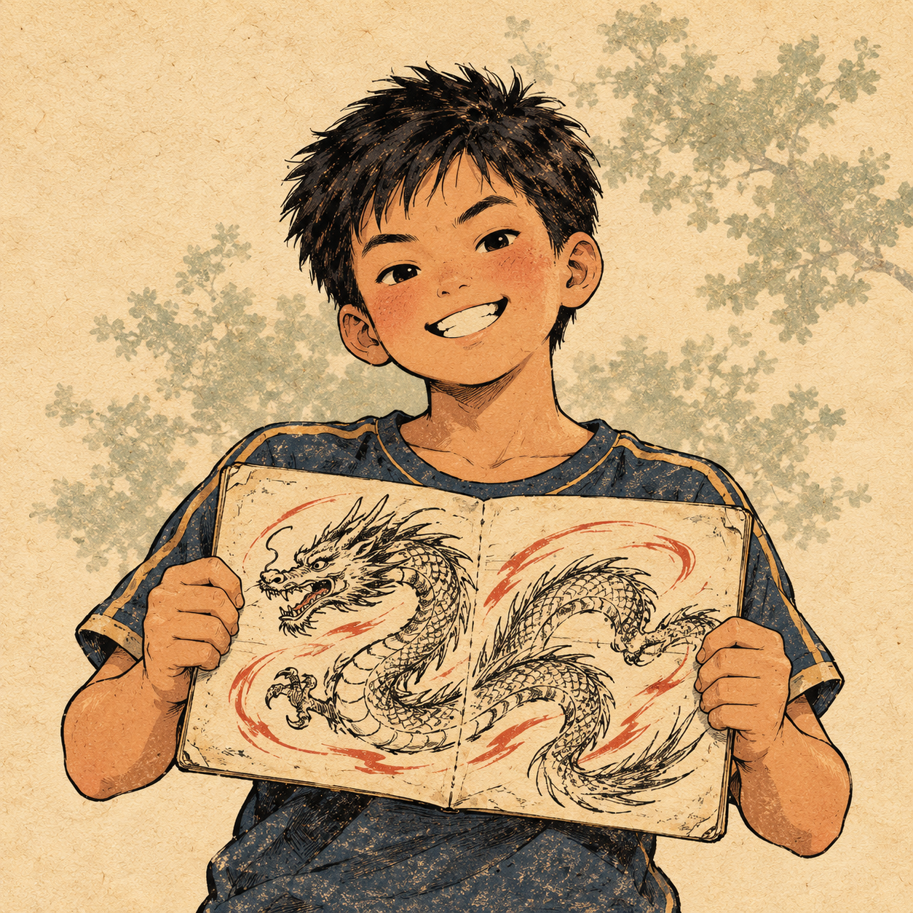

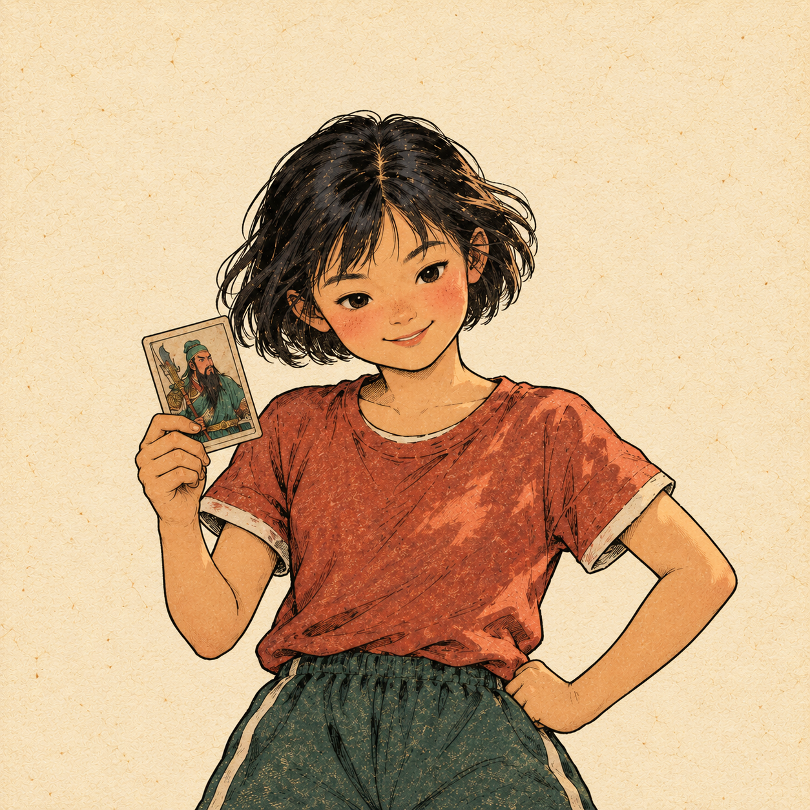